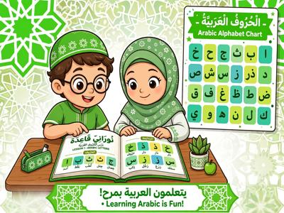

Noorani Qaida Online for Kids: Learn to Read Quran Step-by-Step

Learning to read the Quran begins with recognizing Arabic letters and understanding how they sound and connect. Noorani Qaida is a commonly used beginner resource that introduces these skills gradually, helping children and new learners prepare for Quran reading.
Studying online can make the process more personal when a teacher listens carefully, demonstrates pronunciation, and corrects mistakes during lessons. Progress depends on the learner's starting level, practice routine, and the quality of instruction.
What Is Noorani Qaida?
Noorani Qaida is a beginner learning booklet used to teach the foundations of Arabic reading for Quran learners. Depending on the edition and teaching method, lessons introduce letter recognition, letter sounds, vowel marks, connected letters, and reading patterns that prepare students for reading Quranic text.
Students also begin learning to pronounce Arabic letters correctly. This includes understanding Makharij al-Huruf, the articulation points of Arabic letters, and practicing the sounds that may be unfamiliar to non-Arabic speakers.
Noorani Qaida is suitable for many children and adult beginners. The right starting point depends on whether the learner already recognizes Arabic letters and can read simple Arabic words.
Why Learn Noorani Qaida Online?
- Individual feedback: In one-to-one lessons, a teacher can listen to each learner and correct pronunciation mistakes.
- Clear demonstrations: Letters and reading examples can be displayed on screen while the student follows along.
- Flexible scheduling: Families can choose lesson times that fit school, work, and other responsibilities.
- Structured progression: A teacher can adjust the pace according to the student's understanding instead of moving ahead too quickly.
- Regular practice: Short, consistent review sessions can help learners remember letter sounds and reading patterns.
Online learning works best when the student has a quiet place to study, a reliable internet connection, and opportunities to practice between lessons.
What Does a Noorani Qaida Course Teach?
The exact order and number of lessons can vary between editions of Noorani Qaida and individual teaching programs. A course commonly covers the following skills:
- Arabic letter recognition: Identify letters by shape and learn their names and sounds.
- Letter pronunciation: Practice producing Arabic sounds clearly, with attention to their articulation points.
- Connected letters: Recognize how a letter's written shape can change depending on its position in a word.
- Harakat: Learn the short vowel marks, including Fathah, Kasrah, and Dammah.
- Tanween and longer vowel sounds: Practice common reading patterns introduced by the selected curriculum.
- Sukoon and Shaddah: Learn how these signs affect the way letters are read.
- Guided reading practice: Combine learned skills in progressively more challenging examples before moving to Quranic text.
These are broad learning stages, not a fixed lesson-number system. A good teacher checks understanding at each stage and reviews difficult sounds before introducing new material.
How Long Does It Take to Learn Noorani Qaida?
There is no single timeline that works for every child or adult. Some beginners recognize Arabic letters already, while others need more time to distinguish similar letters and pronounce unfamiliar sounds.
Progress may depend on:
- The learner's previous experience with Arabic letters.
- How regularly the learner attends lessons and reviews at home.
- The length and frequency of lessons.
- The learner's age, attention, and individual learning needs.
- How much pronunciation correction and reading practice are provided.
Short, regular practice is often more manageable for children than infrequent, lengthy sessions. The teacher should assess progress rather than promise that every student will finish within a particular number of months.
For more practical guidance, read our article on how much time children may need for Quran learning.
How Can Parents Help Children Practice at Home?
- Keep practice manageable: Follow the teacher's recommended routine and choose a time when your child is alert.
- Review familiar material: Ask your child to read previously learned letters or examples before trying new ones.
- Listen patiently: Give the child time to pronounce each sound without rushing or interrupting constantly.
- Encourage effort: Praise careful practice and improvement rather than expecting immediate perfection.
- Share difficulties with the teacher: If a sound or reading pattern remains difficult, ask for a focused review.
Parents do not need to act as the Quran teacher. Their role can be to provide encouragement, help maintain a routine, and communicate with the instructor about the child's progress.
You may also find these guides useful: how to teach children Quran at home and how to keep a child motivated during online Quran learning.
Noorani Qaida and Yassarnal Quran: Which Should You Choose?
Noorani Qaida and Yassarnal Quran are both used as beginner resources in some Quran reading programs. Their lesson structure, presentation, and level of detail can differ by edition and teaching approach.
Rather than assuming one resource is always better, ask the teacher which method suits your child's current reading level, pronunciation needs, and learning pace. The most important factors are clear instruction, appropriate practice, and a progression the student can understand.
What Comes After Noorani Qaida?
When a learner can recognize letters, read common combinations, and apply the patterns taught in the course with reasonable accuracy, the teacher can assess readiness for the next stage.
Depending on the student's progress, the next steps may include:
- Guided Quran reading: Practice reading short passages with the teacher's support.
- Tajweed foundations: Learn the rules and pronunciation principles needed for more accurate recitation. See our guide to what Tajweed is and why it matters.
- Gradual memorization: If appropriate for the learner, begin memorizing short surahs while maintaining correct recitation. Explore Quran memorization for children and our one-year Juz Amma memorization plan.
Every student should move forward according to demonstrated skills, not simply because a certain amount of time has passed.
Frequently Asked Questions
Can a child learn Noorani Qaida online?
Yes. Many children can study Noorani Qaida online when lessons match their attention span and a teacher gives them opportunities to read aloud, ask questions, and receive feedback. Younger learners may benefit from shorter activities and support from a parent.
Does a child need to know Arabic before starting?
No. Noorani Qaida is commonly used with beginners who are learning to recognize Arabic letters and read simple combinations. The teacher can determine the appropriate starting point after assessing the child's current skills.
Will completing Noorani Qaida make a child fluent in Quran reading?
Completing the material can provide an important foundation, but it does not guarantee fluency. Learners usually need continued guided reading, pronunciation correction, revision, and practice with Quranic text.
How often should children practice?
A consistent routine is useful, but the ideal duration and frequency depend on the child's age, concentration, and teacher's recommendations. Begin with a manageable routine and adjust it based on how well the child retains the material.
Can adults learn Noorani Qaida too?
Yes. Adults who are new to Arabic reading can use Noorani Qaida to build foundational skills. Lesson pace and practice can be adapted to the learner's experience and schedule.